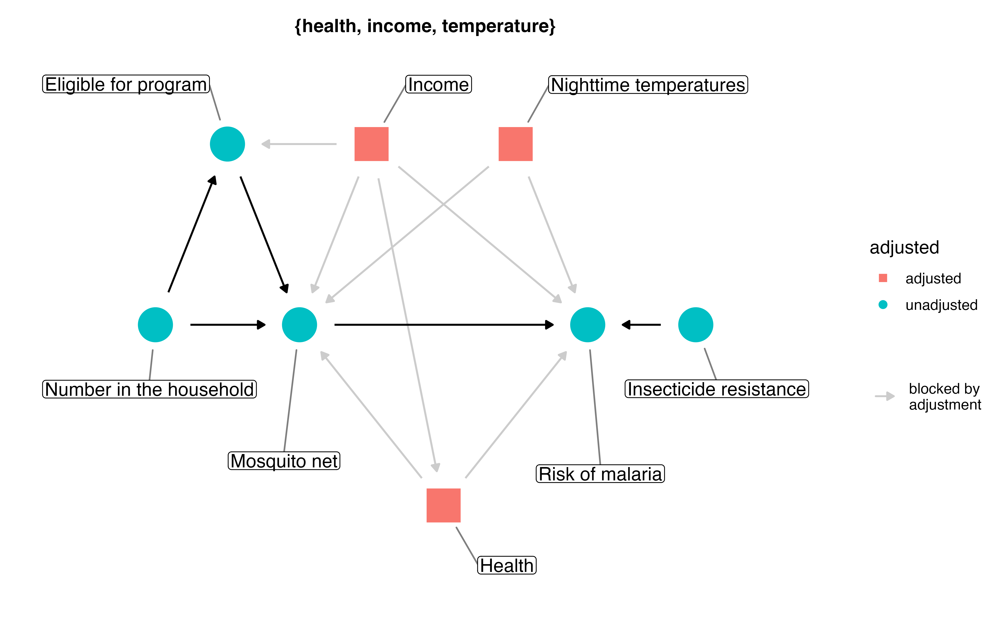
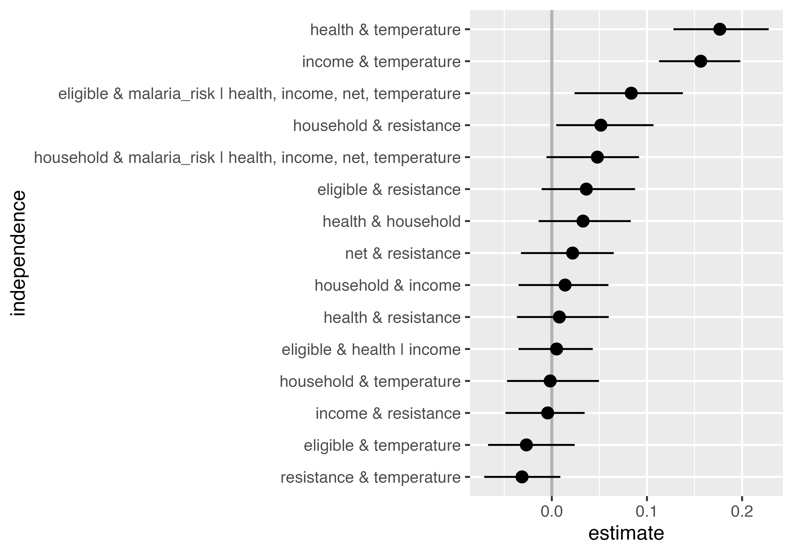
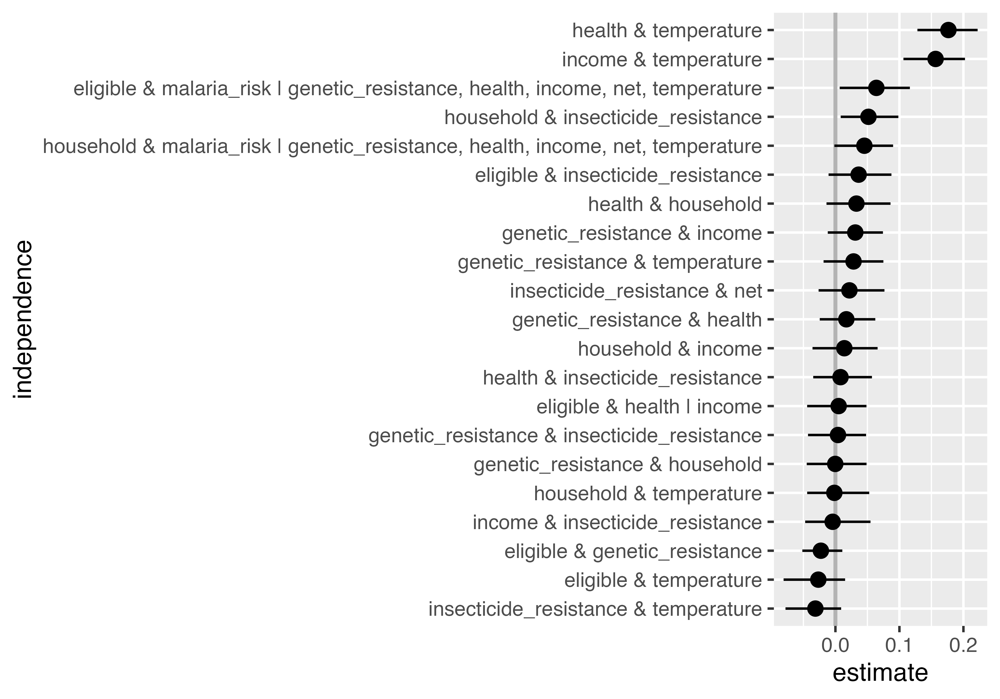
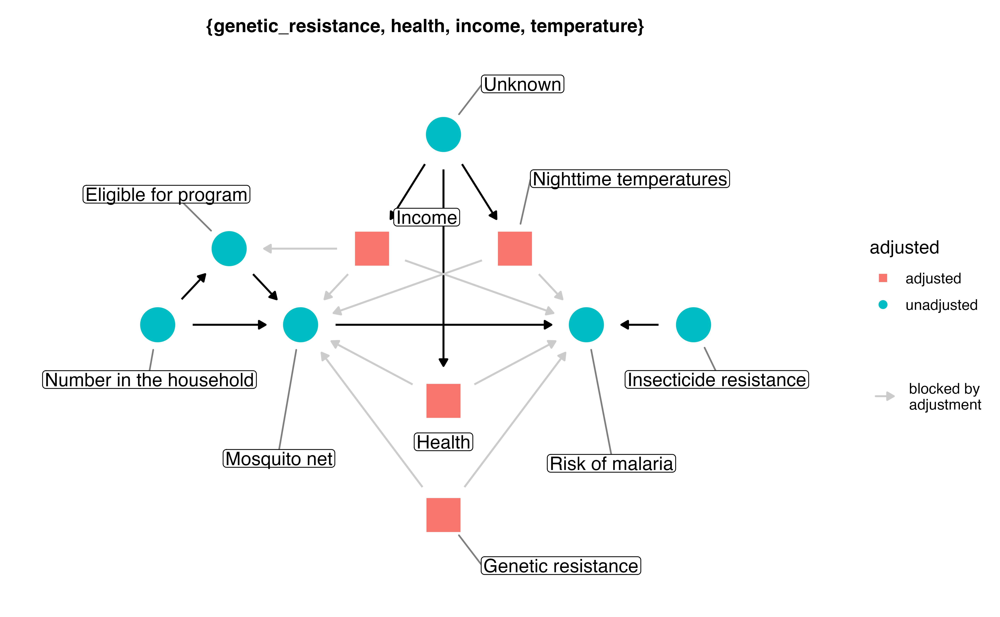
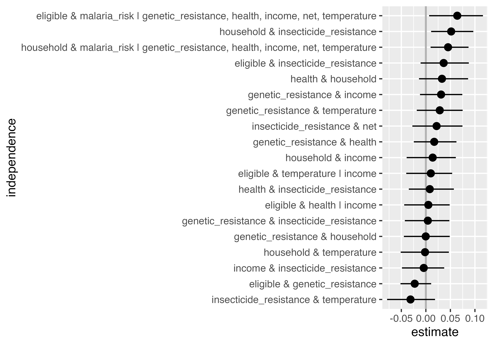
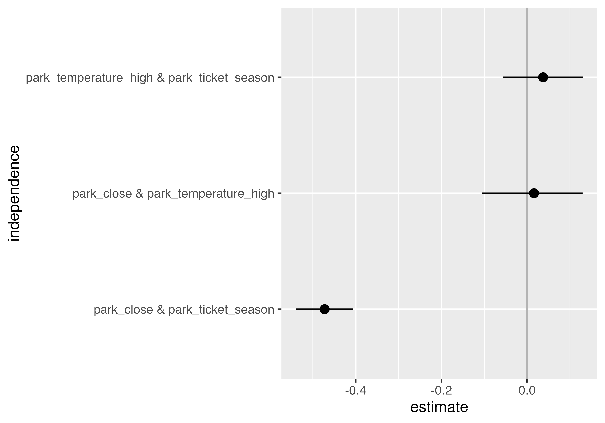
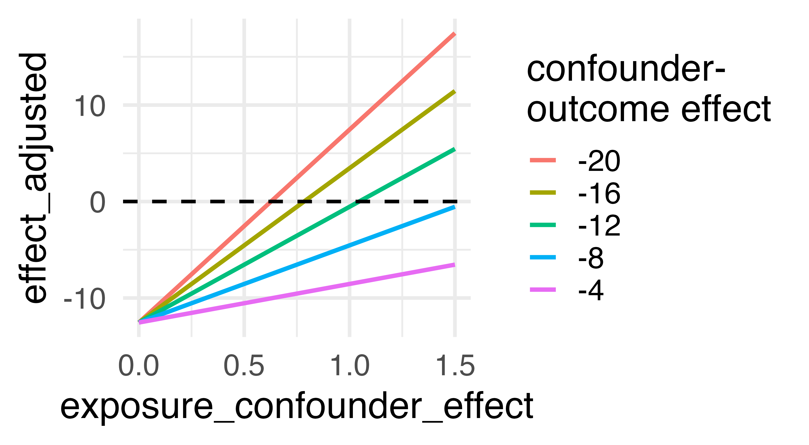

Sensitivity Analyses for Unmeasured Confounding
Wake Forest University
Recall: Propensity scores
Rosenbaum and Rubin showed in observational studies, conditioning on propensity scores can lead to unbiased estimates of the exposure effect
- There are no unmeasured confounders
- Every subject has a nonzero probability of receiving either exposure
How sensitive is our result to conditions other than those laid out in our assumptions and analysis?
Two ways to probe a result
- Explore the logical implications of the DAG: does the data contradict what we assumed?
- Use mathematical techniques to quantify how different the result would be under unmeasured confounding
Checking DAGs for robustness
Recall the mosquito net DAG

If the DAG is right, every valid set works
If the DAG is right, every valid set works
{ health, income, temperature }
{ eligible, health, income, temperature }
{ health, household, income, temperature }
{ eligible, health, household, income, temperature }
{ health, income, resistance, temperature }
{ eligible, health, income, resistance, temperature }
{ health, household, income, resistance, temperature }
{ eligible, health, household, income, resistance, temperature }Estimate the effect for one adjustment set
fit_ipw_effect <- function(.fmla, .data = net_data) {
propensity_model <- glm(.fmla, data = .data, family = binomial())
propensity_model |>
augment(type.predict = "response", data = .data) |>
mutate(wts = wt_ate(.fitted, net, exposure_type = "binary")) |>
lm(malaria_risk ~ net, data = _, weights = wts) |>
tidy() |>
filter(term == "netTRUE") |>
pull(estimate)
}Estimate the effect for four of them
adjustment_sets <- list(
"income, health, temperature" = net ~ income + health + temperature,
"+ eligible" = net ~ income + health + temperature + eligible,
"+ household" = net ~ income + health + temperature + household,
"+ resistance" = net ~ income + health + temperature +
insecticide_resistance
)
tibble(
adjustment_set = names(adjustment_sets),
ate = map_dbl(adjustment_sets, fit_ipw_effect)
)Estimate the effect for four of them
# A tibble: 4 × 2
adjustment_set ate
<chr> <dbl>
1 income, health, temperature -12.5
2 + eligible -12.9
3 + household -12.7
4 + resistance -12.7Now suppose income had not been measured
Leaving out a confounder moves the estimate well outside the spread of the valid sets
Agreement is evidence, not proof
A DAG can be right about every variable it contains and still be missing one entirely
DAG-data consistency
What does the DAG say should be null?
What does the DAG say should be null?
# A tibble: 21 × 5
set a b conditioning_set conditioned_on
<chr> <chr> <chr> <chr> <chr>
1 1 eligible health {income} income
2 2 eligible malaria_r… {health, income… health
3 2 eligible malaria_r… {health, income… income
4 2 eligible malaria_r… {health, income… net
5 2 eligible malaria_r… {health, income… temperature
6 3 eligible resistance <NA> <NA>
7 4 eligible temperatu… <NA> <NA>
8 5 health household <NA> <NA>
9 6 health resistance <NA> <NA>
10 7 health temperatu… <NA> <NA>
# ℹ 11 more rowsDo those relationships hold in the data?
set.seed(1234)
test_conditional_independence(
mosquito_dag,
data = net_data |>
transmute(
net = as.numeric(net),
malaria_risk,
income,
health,
temperature,
resistance = insecticide_resistance,
eligible = as.numeric(eligible),
household
) |>
as.data.frame(),
# bootstrapped samples for the confidence intervals
R = 200
) |>
ggdag_conditional_independence()Do those relationships hold in the data?

Four of them do not hold
- The DAG says temperature is independent of income and of health; in the data they correlate at 0.16 and 0.18
- Two weaker failures:
eligibleand malaria risk, at 0.08 even after conditioning on the adjustment set, andhouseholdand insecticide resistance, at 0.05
What to do about it
Adding arrows for the temperature pairs leaves the adjustment set unchanged, but report the original DAG if you change it
Add genetic resistance to the DAG
Test it against the full dataset
set.seed(1234)
test_conditional_independence(
full_dag,
data = net_data_full |>
transmute(
net = as.numeric(net),
malaria_risk,
income,
health,
temperature,
insecticide_resistance,
eligible = as.numeric(eligible),
household,
genetic_resistance = as.numeric(genetic_resistance)
) |>
as.data.frame(),
R = 200
) |>
ggdag_conditional_independence()Test it against the full dataset

The same four disagreements
- Genetic resistance brings six new implied independencies, and all six hold
- The four failures are still there: temperature with income and with health, at 0.16 and 0.18, and the two weaker ones at 0.05 and 0.06
Adding genetic resistance does not resolve them, so they come from somewhere else
One unknown cause, not three arrows
- The simulation draws income, temperature, and health together from a single correlated distribution
- One unmeasured node stands in for that joint draw, in place of the arrow from income to health
The DAG that generated the data
dgm_dag <- dagify(
malaria_risk ~ net +
income +
health +
temperature +
insecticide_resistance +
genetic_resistance,
net ~ income +
health +
temperature +
eligible +
household +
genetic_resistance,
eligible ~ income + household,
health ~ U,
income ~ U,
temperature ~ U,
latent = "U",
exposure = "net",
outcome = "malaria_risk",
coords = dgm_coords,
labels = dgm_labels
)The unknown common cause

Test the data-generating DAG
set.seed(1234)
test_conditional_independence(
dgm_dag,
data = net_data_full |>
transmute(
net = as.numeric(net),
malaria_risk,
income,
health,
temperature,
insecticide_resistance,
eligible = as.numeric(eligible),
household,
genetic_resistance = as.numeric(genetic_resistance)
) |>
as.data.frame(),
R = 200
) |>
ggdag_conditional_independence()Test the data-generating DAG

Three small disagreements remain
- The temperature relationships are no longer implied nulls, so they are no longer disagreements
- Eligibility and malaria risk, at 0.06
- Household size with insecticide resistance, and with malaria risk, both about 0.05
Why eligibility disagrees
- Eligibility is decided by a sharp cutoff: more than four in the household and income under 700
- The test fits a smooth curve, which cannot follow a sharp cutoff exactly, so a little correlation leaks through at the boundary
Both intervals barely exclude zero, which is what we would expect from chance
Nothing left that the data can see
The data no longer disagrees with this DAG about any relationship it can measure
These tests cannot prove a DAG right or wrong; they tell us where the data disagrees with our assumptions
Your turn 1
Ask the Extra Magic Morning DAG which relationships should be null, then test those implied nulls against the data.
Your turn 1
Your turn 1
Your turn 1
# A tibble: 3 × 5
set a b conditioning_set conditioned_on
<chr> <chr> <chr> <chr> <chr>
1 1 park_close park… <NA> <NA>
2 2 park_close park… <NA> <NA>
3 3 park_temperat… park… <NA> <NA> Your turn 1
Your turn 1

Park close time and ticket season
- Three relationships should be null: park close time with temperature, park close time with ticket season, and temperature with ticket season
- Two of them hold, but park close time and ticket season correlate at -0.47
Why might we see a relationship?
- Park close time and ticket season both track the weather, so a missing arrow is a reasonable explanation
- Chance is another, though we have data for every day of 2018
Quantifying Unmeasured Confounding

Quantifying Unmeasured Confounding
- The exposure-outcome effect
- The exposure-unmeasured confounder effect
- The unmeasured confounder-outcome effect
Quantifying Unmeasured Confounding

Quantifying Unmeasured Confounding

tipr
The grammar of tipr: {action}_{effect}_with_{what}
| part | term | what it means |
|---|---|---|
| action | adjust |
needs both confounder relationships |
tip |
needs only one of them | |
| effect | coef, rr, or, hr |
the scale of effect_observed |
| what | continuous |
exposure_confounder_effect, confounder_outcome_effect |
binary |
exposed_confounder_prev, unexposed_confounder_prev, confounder_outcome_effect |
|
r2 |
confounder_exposure_r2, confounder_outcome_r2 |
What is known about the unmeasured confounder?
- Both the exposure and outcome relationships:
adjust_*()functions - One of the two:
tip_*()functions, oradjust_*()functions in an array - Neither:
adjust_*()ortip_*()in an array,tip_coef_with_r2()benchmarked against measured confounders, or summaries liker_value()ande_value()
1. The observed exposure-outcome effect
propensity_model <- glm(
net ~ income + health + temperature,
family = binomial(),
data = net_data
)
net_data_wts <- propensity_model |>
augment(type.predict = "response", data = net_data) |>
mutate(wts = wt_ate(.fitted, net, exposure_type = "binary"))
observed_effect <- ipw(
propensity_model,
lm(malaria_risk ~ net, data = net_data_wts, weights = wts)
) |>
tidy(conf.int = TRUE)
observed_effect |>
select(estimate, conf.low, conf.high)1. The observed exposure-outcome effect
# A tibble: 1 × 3
estimate conf.low conf.high
<dbl> <dbl> <dbl>
1 -12.5 -13.4 -11.72. The confounder-exposure relationship
- Binary confounder: its prevalence in the exposed and in the unexposed
- Continuous confounder: the difference in means, assuming a normal distribution and unit variance
- Distribution-agnostic: the partial R2 for the exposure
What “unit variance” means
What “unit variance” means
# A tibble: 2 × 3
net mean standardized_mean
<lgl> <dbl> <dbl>
1 FALSE 24.0 5.86
2 TRUE 23.7 5.79What “unit variance” means
- Nighttime temperatures average 23.7 degrees for net users and 24.0 for everyone else, with a standard deviation of 4.1 degrees
- On a unit-variance scale that difference is -0.08
- So
exposure_confounder_effect = 0.1means the confounder differs by a tenth of a standard deviation between exposure groups
3. The confounder-outcome relationship
- The coefficient for the confounder in a fully adjusted outcome model, in the units of the outcome
- Here that is points of malaria risk per standard deviation of the confounder
- Or the exponentiated version: a risk ratio, odds ratio, or hazard ratio
An unmeasured confounder: genetic resistance
- People with this genetic resistance have a malaria risk lower by about 10
- About 26% of people who use nets have this genetic resistance
- About 5% of people who don’t use nets have this genetic resistance
Adjust the estimate for genetic resistance
Adjust the estimate for genetic resistance
# A tibble: 3 × 2
effect_observed effect_adjusted
<dbl> <dbl>
1 -12.5 -10.4
2 -13.4 -11.3
3 -11.7 -9.59These data are simulated. The true effect of net use on malaria risk is about -10
Bias analysis, checked against a known answer
- Observed, with genetic resistance unmeasured: -12.5 (-13.4, -11.7)
- Adjusted with tipr: -10.4 (-11.3, -9.6)
- Re-estimated with genetic resistance measured: -10.2
- The truth: -10
Vary both parameters at once
Vary both parameters at once
Vary both parameters at once

What will tip our confidence bound to cross zero?
tip_coef() finds the tipping point
tip_coef() finds the tipping point
# A tibble: 1 × 1
exposure_confounder_effect
<dbl>
1 1.17“An unmeasured confounder with an effect of -10 on malaria risk would have to differ by 1.17 standard deviations between net users and non-users to tip our upper bound to zero. Genetic resistance differs in prevalence by about 0.21, so a confounder like it cannot on its own explain away this result.”
A real-life example

The published result
- Matched 42,217 new metformin users to 42,217 new sulfonylurea users
- Outcome: Lung Cancer
- Adjusted Hazard Ratio: 0.87 (0.79, 0.96)
What if heavy alcohol consumption is prevalent among 4% of Metformin users and 6% of Sulfonylurea users?
Meadows SO, Engel CC, Collins RL, Beckman RL, Cefalu M, Hawes-Dawson J, et al. 2015 health related behaviors survey: Substance use among US active-duty service members. RAND; 2018.
tipr Example
What if we assume the effect of alcohol consumption on lung cancer after adjusting for other confounders is 2?
tipr Example
# A tibble: 3 × 5
hr_adjusted hr_observed exposed_confounder_prev
<dbl> <dbl> <dbl>
1 0.805 0.79 0.04
2 0.887 0.87 0.04
3 0.978 0.96 0.04
# ℹ 2 more variables: unexposed_confounder_prev <dbl>,
# confounder_outcome_effect <dbl>tipr Example
tipr Example
# A tibble: 1 × 1
confounder_outcome_effect
<dbl>
1 3.27